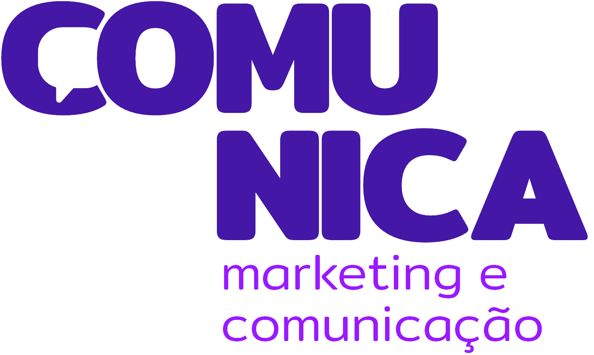
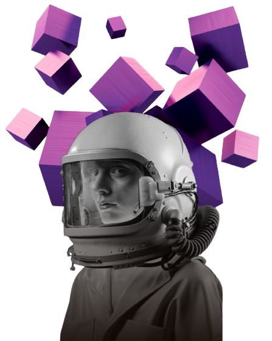

Você é um candidato apaixonado pela sua comunidade, mas enfrenta desafios em alcançar e conectar-se com seus eleitores de maneira eficaz? Não se preocupe, estamos aqui para ajudar!
 FALE CONOSCO
FALE CONOSCO


FALE CONOSCO

Na Comunica, acreditamos que o sucesso é alcançado através da colaboração e do comprometimento de uma equipe talentosa e diversificada. Conheça um pouco mais sobre os membros que compõem o nosso time.

CEO da agência Comunica, Jornalista por formação, atua em Comunicação e Marketing como analista Estratégica de Comunicação e marketing em diferentes nichos de atuação, já atuou em campanhas políticas de candidato a Deputado Federal e de candidata ao conselho tutelar de Fortaleza/Ce.
Jornalista com MBA em Marketing Estratégico Digital, com mais de sete anos de experiência em comunicação e marketing. Dediquei mais de três anos ao marketing político, destacando-me pela vitória em uma campanha majoritária na terceira maior cidade do Ceará, Juazeiro do Norte. Minha paixão é desenvolver estratégias que inspirem, conquistem e mobilizem as pessoas.